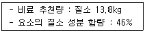
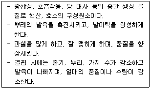
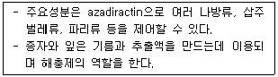
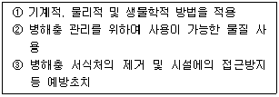

유기농업기사 (2015-03-08 기출문제)
1과목: 재배원론
1. 다음 중에서 배유종자가 아닌 작물은?
- 보리
- 율무
- 옥수수
- 녹두
(정답률: 75%)

2. 우리나라의 벼농사는 대부분이 기계화되어 있는데, 이러한 기계화의 가장 큰 장점은?
- 유기농 재배가 가능하다.
- 농업 노동력과 인건비가 크게 절감된다.
- 화학비료나 농약의 사용을 크게 줄일 수 있다.
- 재배방식의 개선과 농자재 사용을 줄 일 수 있어서 소득이 향상된다.
(정답률: 87%)
3. 작물에 대한 수해의 설명으로 옳은 것은?
- 화본과 목초, 옥수수는 침수에 약하다.
- 벼 분얼초기는 다른 생육단계보다 침수에 약하다.
- 수온이 높은 것이 낮은 것에 비하여 피해가 심하다.
- 유수가 정체수보다 피해가 심하다.
(정답률: 66%)
4. 작물의 채종을 목적으로 재배할 때 작물 퇴화방지를 위한 격리 거리가 가장 먼 것은?4
- 벼
- 콩
- 보리
- 배추
(정답률: 79%)
5. 작물의 내열성을 올바르게 설명한 것은?
- 세포내의 유리수가 많으면 내열성이 증대된다.
- 어린 잎보다 늙은 잎이 내열성이 크다.
- 세포의 유지함량이 증가하면 내열성이 감소한다.
- 세포의 단백질 함량이 증가하면 내열성이 감소한다.
(정답률: 64%)
6. 식물체의 부위 중 내열성이 가장 약한 곳은?
- 눈
- 유엽(幼葉)
- 완성엽(完成葉)
- 중심주(中心柱)
(정답률: 66%)
7. 두류에서 도복의 위험이 가장 큰 시기는 개화기로부터 얼마인가?
- 약 10일간
- 약 20일간
- 약 30일간
- 약 40일간
(정답률: 70%)
8. 식물의 광합성 속도에는 이산화탄소의 농도 뿐 아니라 광의 강도도 관여를 하는데, 다음 중 광이 약할 때에 일어나는 일반적인 현상은?
- 이산화탄소 보상점과 포화점이 다 같이 낮아진다.
- 이산화탄소 보상점과 포화점이 다 같이 높아진다.
- 이산화탄소 보상점이 높아지고 이산화탄소 포화점은 낮아진다.
- 이산화탄소 보상점은 낮아지고 이산화탄소 포화점은 높아진다.
(정답률: 75%)
9. 고추의 기원지로 알려진 곳은?
- 중국
- 인도
- 중앙아시아
- 남아메리카
(정답률: 67%)
10. 다음 중 T/R율에 관한 설명으로 올바른 것은?
- 감자나 고구마의 경우 파종기나 이식기가 늦어질수록 T/R율이 작아진다.
- 일사가 적어지면 T/R울이 작아진다.
- 질소를 다량시용하면 T/R율이 작아진다.
- 토양함수량이 감소하면 T/R율이 감소한다.
(정답률: 58%)
11. 토양수분의 수주 높이가 100cm일 경우 pF값과 기압은 각각 얼마인가? (순서대로 pF, 기압)
- 1, 0.01
- 2, 0.1
- 3, 1
- 4, 10
(정답률: 66%)
12. 일반 토양의 3상에 대하여 올바르게 기술한 것은?
- 기상의 분포 비율이 가장 크다.
- 고상의 분포는 50%정도이다.
- 액상은 가장 낮은 비중을 차지한다.
- 고상은 액체와 기체로 구성된다.
(정답률: 84%)
13. 옥신의 사용 설명으로 틀린 것은?
- 국화 삽목 시 발근을 촉진한다.
- 앵두나무 접목시 접수와 대목의 활착을 촉진한다.
- 파인애플의 화아분화를 촉진한다.
- 사과나무의 과경 이층형성을 촉진한다.
(정답률: 74%)
14. 다음 중 단일상태에서 화성이 유도 촉진되는 식물은?
- 보리
- 감자
- 배추
- 들깨
(정답률: 62%)
15. 작물의 내습성에 관여하는 요인을 잘못 설명한 것은?
- 뿌리의 피층세포가 사열로 되어 있는 것은 직렬로 되어 있는 것 보다 내습성이 약하다.
- 목화한 것은 환원성 유해물질의 침입을 막아서 내습성이 강하다.
- 부정근의 발생력이 큰 것은 내습성이 약하다.
- 뿌리가 황화수소 등에 대하여 저항성이 큰 것은 내습성이 강하다.
(정답률: 56%)
16. 다음 중에서 중경제초의 이로운 점과 거리가 먼 것은?
- 토양수분의 증발을 경감시킨다.
- 비료의 효과를 증진시킬 수 있다.
- 풍식과 동상해를 경감시킬 수 있다.
- 종자의 발아와 토양 통기가 조장된다.
(정답률: 63%)
17. 유기재배시 토양개량과 작물생육을 위하여 사용 가능한 물질로 거리가 먼 합성석회는?
- 패분
- 석회석
- 소석회
- 석회소다 영화물
(정답률: 44%)
18. 개량삼포식농법에 해당하는 작부방식은?
- 자유경작법
- 콩과작물의 순환농법
- 이동경작법
- 휴한농법
(정답률: 85%)
19. 벼의 생육 중 냉해에 의한 출수가 가장 지연되는 생육단계는?
- 유효분얼기
- 유수형성기
- 감수분열기
- 출수기
(정답률: 59%)
20. 벼에서 백화묘의 발생은 어떤 성분의 생성이 억제되기 때문인가?
- 옥신
- 카로티노이드
- ABA
- NAA
(정답률: 79%)
2과목: 토양비옥도 및 관리
21. 일반토양 유실예측공식(USLE)에 포함되지 않는 인자는?
- 토양관리 인자
- 경사도와 경사장 인자
- 작부인자
- 토양온도 인자
(정답률: 73%)
22. 식물의 필수영양소에 해당되지 않는 것은?
- 마그네슘(Mg)
- 질소(N)
- 철(Fe)
- 게르마늄(Ge)
(정답률: 85%)
23. 질소기아현상에 대한 설명으로 틀린 것은?
- 대체로 탄질비가 30이상일 때 나타난다.
- 토양미생물과 식물 사이의 질소경쟁으로 나타난다.
- 탄질비가 15이하가 되면 해소된다.
- 볏짚을 사용하면 해소될 수 있다.
(정답률: 81%)
24. 토양유실예측공식으로 토양보전인자 P값은 측정할 경우 토양관리가 가장 잘 될 수 있는 관리법은? (단, 동일한 조건, 경사도 15%, 경사장 10cm, 사양토이다.)
- 등고선 재배
- 초생대
- 부초
- 혼층고
(정답률: 44%)
25. 다음 음이온 중 어느 것이 가장 먼저 토양교질물에 흡착되는가?
- Cl-
- NO3-
- SO42-
- PO43-
(정답률: 50%)
26. 입자비중 2.6, 지름 0.002mm인 구상의 토양입자가 20℃ 물속에서 10cm를 침강하는데 소요되는 시간은?
- 2시간
- 4시간
- 8시간
- 16시간
(정답률: 37%)
27. 토양산도 교정을 위한 석회 시용량 결정을 위하여 고려되어야 하는 토양산성의 종류는?
- 잠산성
- 잔류산성
- 전산도
- 활산성
(정답률: 35%)
28. 풍화산물의 이동과 퇴적 방식에 따라 정적토와 운적토로 구분된다. 정적토에 해당하는 것은?
- 이탄토
- 붕적토
- 선상퇴토
- 수적토
(정답률: 75%)
29. 토양층위에 대한 설명으로 틀린 것은?
- A층 : 용탈층으로 가용성 염류용탈이 일어난다.
- B층 : A층에서 용탈된 물질이 집적된다.
- C층 : 토양생성작용을 거의 받지 않는 모재층이다.
- O층 : 유기물 층위로 A층 아래에 위치한다.
(정답률: 85%)
30. 식물이 가장 쉽게 흡수 이용할 수 있는 토양 수분은?
- 흡습수
- 모세관수
- 결합수
- 중력수
(정답률: 72%)
31. 토양미생물 중 세균인 것은?
- 질산화성균
- 담자균
- 자낭균
- 규조류
(정답률: 54%)
32. 우리나라 토양환경보전법 상 토양오염물질이 아닌 것은?
- 불소화합물
- 시안화합물
- 총 미생물
- 석유계 총탄화수소
(정답률: 82%)
33. 다음 중 토양 수분 함량과 퍼텐셜에 대한 설명으로 옳은 것은?
- 토양 내에서 수분은 항상 함량이 높은 곳에서 낮은 곳으로 이동한다.
- 토양에서 수분은 항상 위에서 아래 방향으로 이동한다.
- 토성과 구조에 관계없이 수분함량이 높으면 항상 수분포텐셜도 높다.
- 불포화 토양에서 수분포텐셜은 주로 메트릭포텐셜에 의해 결정된다.
(정답률: 47%)
34. 토양에서 일어나는 질소변환과정에 대한 다음 설명 중에서 가장 옳은 것은?
- 질산화작용은 NH4+이 NO3-로 산화되는 과정이다.
- 암모니아화 반응은 공기 중의 N2가 암모니아로 전환되는 과정이다.
- 탈질작용은 유기물로부터 무기태질소가 방출되는 과정이다.
- 질소고정은 NH4+이나 NO3-로부터 단백질이 합성되는 과정이다.
(정답률: 78%)
35. 토양관리처방서의 비료 추천량이 다음과 같을 때 무농약 친환경농산물 인증 기준에 따라 사용할 수 있는 요소비료의 양은?

- 10kg 이하
- 15kg 이하
- 20kg 이하
- 30kg 이하
(정답률: 53%)
36. 유기물의 탄질률과 토양 질소에 대한 설명으로 옳은 것은?
- 탄질률 20 이하인 유기물을 시용하면 토양중의 무기질소 함량이 감소한다.
- 탄질률이 낮은 유기물일수록 토양 무기질소의 부동화를 촉진시킨다.
- 탄질률이 높은 유기물을 시용하면 질산화작용이 촉진된다.
- 탄질률이 높은 유기물은 작물의 무기질소 흡수를 방해 할 수 있다.
(정답률: 50%)
37. 우리나라 경작지 토양 중 통상적으로 영양염류의 함량이 가장 높은 곳은?
- 시설재배지
- 과수원
- 논
- 밭
(정답률: 66%)
38. 담수 논토양의 일반적인 특성변화로 가장 옳은 것은?
- 호기성 미생물 활동이 증가한다.
- 인산성분의 유효도가 증가한다.
- 토양의 색은 적갈색으로 변한다.
- 토양이 산성화 된다.
(정답률: 60%)
39. 용적밀도 1.0g/cm3인 건조 토양 1000m3에 중량수분함량을 25%로 조절할 때 필요한 수분무게(ton)는?
- 25
- 100
- 250
- 500
(정답률: 65%)
40. 암모니아의 휘산이 잘 일어나는 조건이 아닌 것은?
- 건조한 조건
- 요소비료 처리
- 높은 온도
- pH7 이하의 토양
(정답률: 52%)
3과목: 유기농업개론
41. 유기축산물의 유기가축 1마리당 갖추어야 하는 가축사육 시설의 소요면적 기준으로 틀린 것은?
- 번식우 방사식 사육시설 : 10m2
- 7~12월령 육성우 깔짚 사육시설 : 6.4m2
- 육성돈 사육시설 : 4.0m2
- 산란 육성계 사육시설 : 0.16m2
(정답률: 61%)
42. 유기축산에서 반추가축의 사료에 첨가할 수 있는 물질은?
- 요소
- 돈모 아미노산
- 어분
- 모넨신
(정답률: 72%)
43. 한우 사육 농가의 조수입이 7,000만원, 생산비가 3,500만원 (경영비 3,000만원, 자가노력비 500만원)이라고 할 때 소득은 얼마인가?
- 3,000만원
- 3,500만원
- 4,000만원
- 4,500만원
(정답률: 52%)
44. 체내 혈약중의 헤모글로빈과 결합하여 메트헤모글로빈을 형성, 혈액의 산소운반능력을 감소시켜 특히 어린이의 청색증을 직접 유발하는 물질은?
- 암모늄염
- 인산염
- 나트륨염
- 질산염
(정답률: 48%)
45. 가축 질병의 조기 발견 대상에 해당되지 않는 것은?
- 가축이 기운이 없어 자주 누워서 눈을 감고 식욕이 감퇴한다.
- 피부가 탄력성이 없고, 털은 거치나 탈모가 없다.
- 콧등이 마르고 눈과 콧구멍의 점막이 충혈되거나 누런색이다.
- 거품을 내고 침을 흘리며 침에서 악취가 난다.
(정답률: 72%)
46. 종자 발아의 4요소?
- 온도, 양분, 산소, 수분
- 수분, 산소, 빛, 양분
- 온도, 빛, CO2, 수분
- 온도, 수분, 산소, 빛
(정답률: 68%)
47. 반추동물의 위에서 미생물에 의한 사료분해가 이루어지는 반추위에 해당하며, 혹위라고 불리는 것은?
- 제 1위
- 제 2위
- 제 3위
- 제 4위
(정답률: 48%)
48. 신품종의 구비 요건으로 가장 거리가 먼 것은?
- 구별성
- 균일성
- 안정성
- 선명성
(정답률: 77%)
49. 병원체와 작물병의 분류가 잘못 연결된 것은?
- 곰팡이 : 벼 도열병, 벼 잎집무늬마름병
- 바이러스 : 벼 오갈병, 벼 줄무늬잎마름병
- 세균 : 채소 무름병, 감자 둘레썩음병
- 곰팡이 : 감자 더뎅이병, 과수 근두암종병
(정답률: 64%)
50. 유기농업에 사용하는 퇴비에 대한 설명으로 틀린 것은?
- 토양진단 후 퇴비 사용량을 결정한다.
- 토양전염병을 억제하는 효과를 나타낸다.
- 식물체에 양분과 미량원소를 지속적으로 공급해준다.
- 퇴비화 후에는 분해가 어려운 부식성 물질의 비율이 감소한다.
(정답률: 46%)
51. 유기수도작의 직파재배에 알맞은 품종이 아닌 것은?
- 초기신장이 빠르면서 이삭이 큰 품종
- 저온시 발아가 잘되는 품종
- 발아초기 신장이 잘되는 품종
- 고산소 요구성 품종
(정답률: 73%)
52. 다음 설명하는 식물의 필수원소는?

- N
- P
- Ca
- Cu
(정답률: 60%)
53. 토양미생물 중 식물에게 인을 공급하는 역할을 하는 것은?
- Rhizobium
- Azotobacter
- Myxorrhizal
- Azosprillum
(정답률: 62%)
54. 비배관리상 문제점이 있는 토양의 유기적인 관리방법으로 옳지 않은 것은?
- 산성화된 토양을 개량하기 위해 석회시용, 윤작, 적절한 퇴비를 시용한다.
- 과다하게 축적된 질소를 제거하기 위해 청예작물을 심는다.
- 톱밥, 버섯배양 퇴비와 같은 유기질을 시용한다.
- 서양에서는 주로 화본과 목초를 포함한 윤작에 의해 토양 유기물 함량을 증가시킨다.
(정답률: 40%)
55. 축사를 설계할 경우 크기와 형태를 결정하는 요인으로 적합하지 않는 것은?
- 토양의 종류와 비옥도
- 목장의 규모
- 개인의 기호성
- 소비시장과의 거리
(정답률: 54%)
56. 다음 설명하는 생물농약의 성분은?

- 님
- 제충국
- 로테논
- 마늘
(정답률: 66%)
57. 유기농업을 목적으로 논에 객토를 할 때 본답 목표 점토 함량은 15%이고, 작토심은 18cm이다. 현재 객토대상 논의 점토함량은 10%이고, 객토원은 점토함량 25%인 산적토를 사용 할 때 객토 사용량(ton/10a)은?
- 72톤
- 82톤
- 92톤
- 102톤
(정답률: 49%)
58. 시설재배 토양에 대한 설명으로 옳지 않은 것은?
- 강우 차단과 비료과다 사용으로 인해 시설재배 토양에 염류 집적이 일어나 토마토의 풋마름병 등 생육장해를 일으킨다.
- 시설재배토양을 개량하기 위해 유기물시용, 제염작물재배, 윤작재배 등을 하면 효과적이다.
- 노동집약적인 시설재배는 좁은 면적에 사람들의 잦은 왕래로 인한 답압과 관수작업으로 토양내 통기성이 불량하다.
- 화학비료의 지속적인 사용으로 시설재배 토양은 산성토양으로 변해 작물의 철(Fe)결핍 증상을 일으킨다.
(정답률: 56%)
59. 광물질사료중 방목초지의 초식가축이 가장 많이 이용하는 사료로서 3% 이상 많이 급여하면 설사와 체중감소의 부작용이 있는 것은?
- 인산칼슘제
- 석회석
- 패분
- 소금
(정답률: 52%)
60. 유기농업에서 병해충 제어를 위해 4단계 방어선을 설정할 수 있다. 단계별 방어선과 핵심 내용으로 틀린 것은?
- 1차 방어선 - 윤작
- 2차 방어선 - 생태계의 섬(Buffer zone)
- 3차 방어선- 다량시비
- 4차 방어선 - 허용자재 사용
(정답률: 65%)
4과목: 유기식품 가공.유통론
61. 식품 중의 대장균군 검사 결과 MPN 값이 50이 나왔다면, 검체 100ml 중에 존재하는 대장균군의 수는 몇 개인가?
- 5
- 50
- 500
- 5000
(정답률: 67%)
62. 다음 중 샐러드 원료용으로서 호흡작용이 왕성한 농산물을 슬라이스형태로 절단하여 MA 포장하여야 할 때 가장 적합한 포장재질은?
- 폴리에틸렌(PE)
- 폴리아미드(PA)
- 폴리에스터(PET)
- 폴리염화비닐리덴(PVDC)
(정답률: 84%)
63. 고도 산업사회에서의 식품소비형태와 거리가 먼 것은?
- 고급, 편의, 건강을 추구한다.
- 대량생산에 의한 대량유통체계로 전환된다.
- 가공, 조리, 편의식품이 증가한다.
- 신선식품, 유기가공식품이 발달한다.
(정답률: 77%)
64. 다음 중 식중독을 일으키는 균은?
- Saccharomyces cerevisiae
- Clostridium botulium
- Lactobacillus plantarum
- Aspergillus oryzae
(정답률: 74%)
65. 식품의 기준 및 규격 고시의 내용으로 틀린 것은?
- 냉동은 -18℃ 이하, 냉장은 0 ~ 10℃ 를 말한다.
- 건조물(고형물)은 원재료를 건조하여 남은 고형물로 별도의 규격이 정하여 지지 않은 한, 수분함량이 10% 이하인 것을 말한다.
- 살균이라 함은 따로 규정이 없는 한 세균, 효모, 곰팡이 등 미생물의 영양세포를 사멸시키는 것을 말한다.
- 유통기간이라 함은 소비자에게 판매가 가능한 기간을 말한다.
(정답률: 52%)
66. 다음 중 김치의 식품가치에 중요한 성분은?
- 단백질, 젖산균
- 젖산균, 식이섬유
- 식이섬유, 지질
- 지질, 단백질
(정답률: 78%)
67. 다음 중 두부의 응고제로서 사용할 수 없는 것은?
- 염화마그네슘
- 포도당
- 염화칼슘
- 황산칼슘
(정답률: 73%)
68. 세균의 생육곡선에서 시기별로 순서가 바르게 된 것은?
- 대수기 - 유도기 - 사멸기 - 정지기
- 유도기 - 정지기 - 대수기 - 사멸기
- 유도기 - 대수기 - 정지기 - 사멸기
- 정지기 - 유도기 - 대수기 - 사멸기
(정답률: 80%)
69. 다음 중 HACCP의 위해요소 중 화학적 위해요소가 아닌 것은?
- 중금속
- 농약
- 항생물질
- 세균(박테리아)
(정답률: 80%)
70. 포장 재료를 선정하기 위해 고려할 사항으로 틀린 것은?
- 수분함량이 많은 식품의 포장에는 내수성이 있는 재료를 선택한다.
- 가열살균을 하는 제품의 경우 고온에서도 포장재료의 특성 변화가 적은 것을 선택한다.
- 지방을 많이 함유하는 식품은 기체투과도가 높은 재료를 선택한다.
- 냉동식품은 저온에서도 물리적 강도변화가 적은 포장 재료를 선택한다.
(정답률: 85%)
71. 다음 중 동물근원 천연첨가물이 아닌 것은?
- casein
- cellulase
- beeswax
- gelatin
(정답률: 67%)
72. 식품을 취급하는 작업장의 구비조건 중 잘못된 것은?
- 작업장의 입지로는 폐수. 오물처리가 편리하고, 공기가 맑고 깨끗하며, 교통이 편리한 곳이 좋다.
- 바닥 표면은 내구성의 재질로서 미끄러지지 않고 쉽게 균열이 가지 않는 재질로 하여야 한다.
- 벽과 바닥이 맞닿는 모서리는 청소를 용이하게 하기 위하여 90°로 각을 유지하는 것이 좋다.
- 작업실의 벽 및 천장은 내수성이 있어야 하며 결로가 생기지 않도록 하여야 한다.
(정답률: 77%)
73. 고메톡실펙틴의 젤리화가 이루어지기 위한 3요소가 아닌 것은?
- 펙틴
- 산
- 염
- 당
(정답률: 63%)
74. 농산물유통 과정에서 일어나는 유통조성기능에 해당되는 것은?
- 운송
- 등급화
- 가공
- 판매
(정답률: 53%)
75. 화학적 위해요소가 아닌 것은?
- 카드뮴
- 포름알데히드
- 유리조각
- 농약
(정답률: 89%)
76. 식품등의 표시기준에 의한 식용유지류 제품의 트랜스지방이 100g당 얼마 미만일 경우 “0”으로 표시할 수 있는가?
- 1g
- 2g
- 4g
- 8g
(정답률: 64%)
77. 김치가 제조 공정상 상대적으로 위생적인 측면에서 안전한 이유를 올바르게 묶은 것은?
- 원료의 세척, 소금 첨가, 젖산균 번식
- 설탕 첨가, 소금 첨가, 미생물번식 억제물질 첨가
- 설탕 첨가, 미생물번식 억제물질 첨가, 원료의 세척
- 냉장보관, 고초균 번식, 저장용기의 살균
(정답률: 82%)
78. 농산물의 유통환경 중 거시환경에 해당하는 것이 아닌 것은?
- 경제적 환경
- 기술적 환경
- 기업적 환경
- 문화적 환경
(정답률: 61%)
79. 유기과채류 가공식품 제조방법으로 틀린 것은?
- 과채류는 비타민 등 영양분 손실이 적게 가공하는 것이 좋다.
- 채소류는 알칼리성이기 때문에 산성 첨가물을 최대한 사용하여 가공하는 것이 좋다.
- 잼류는 펙틴, 산, 당분이 적당한 원료를 사용하여 가공하는 것이 좋다.
- 부패 및 변질이 잘되지 않는 원료를 사용하여 가공하는 것이 좋다.
(정답률: 85%)
80. Clostridium botulinum 의 z 값은 10℃ 이다. 121℃에서 가열하여 균의 농도를 100,000의 1로 감소시키는데 20분이 걸렸다면, 살균온도를 131℃로 하여 동일한 사멸률을 보이려면 몇 분을 가열하여야 하는가?
- 1분
- 2분
- 3분
- 4분
(정답률: 63%)
5과목: 유기농업관련 규정
81. 무농약농산물 인증부가기준에 관한 설명으로 적합하지 않은 것은?
- 버섯류 배지의 잔류농약 검출한계는 0.01ppm
- 버섯류 배지는 관련 법에서 정한 1지역의 토양오염 우려 기준 이내
- 인삼을 2년 이상 재배 시 경영관련 자료는 파종일 이후부터 기록
- 인증을 받으려는 농장 내에 유기합성농약 보관
(정답률: 75%)
82. 인증기관에 대한 행정처분 기준에 대한 설명이다. 다음 중 1회 위반에 따른 행정처분 기준이 다른 하나는?
- 부정한 방법으로 인증기관의 지정을 받은 경우
- 업무정지 기간 중 계속하여 인증업무를 한 경우
- 고의 또는 중대한 과실로 인증품의 유효기간 연장 절차를 지키지 아니한 경우
- 거짓으로 인증기관의 지정을 받은 경우
(정답률: 66%)
83. 유기농산물 인증사업자가 인증품을 담은 포장에 표시해야 하는 사항이 아닌 것은?
- 인증기관명
- 인증번호
- 인증사업자 주소
- 인증품 생산지
(정답률: 76%)
84. 다음은 무농약인증 생산물의 병해충 관리 및 방제시 우선적으로 조치할 사항이다. 순서를 맞게 배열한 것은?

- 3 - 2 -1
- 2 - 1 - 3
- 3 - 1 - 2
- 2 - 3 - 1
(정답률: 70%)
85. 『농림축산식품부 소관 친환경농어업 육성 및 유기식품 등의 관리·지원에 관한 법률 시행규칙』상 인증품에 대한 검사 결과 잔류물질이 검출되어 인증기준에 맞지 아니한 때의 행정처분 기준은?
- 해당 인증품의 세부 표시사항의 변경
- 인증품 판매금지 7일
- 해당 인증품의 인증표시 제거
- 표시정지 3개월
(정답률: 77%)
86. 인증기관 지정의 조직과 인력의 기준으로 틀린 것은?
- 5명 이사의 인증심사원을 둘 것
- 인증업무를 수행할 상설 전담조직을 갖출 것
- 인증기관의 운영에 필요한 재원을 확보할 것
- 인증업무 외의 업무를 수행하고 있는 인증기관의 경우 반드시 무농약농산물 인증을 위한 컨설팅을 할 것
(정답률: 64%)
87. 『농림축산식품부 소관 친환경농어업 육성 및 유기식품 등의 관리·지원에 관한 법률 시행규칙』에서 규정하고 있는 무농약농산물의 인증기준으로 틀린 것은?
- 재배포장의 토양은 토양오염 우려기준을 초과하지 아니하여야 하며, 잔류농약이 검출되어서는 아니 된다.
- 재배포장의 토양은 토양 비옥도가 유지 및 개선되도록 노력하여야 하며, 염류와는 관련사항이 없다.
- 화학비료는 재배포장별로 권장 성분량의 3분의 1이하를 사용하여야 한다.
- 유기합성농약을 사용하지 아니하여야 하며, 적절한 윤작계획에 따라 재배하도록 권장한다.
(정답률: 67%)
88. 유기·무농약농산물의 병해충 관리를 위하여 사용이 가능한 물질이 아닌 것은?
- 구리염, 부르고뉴액
- 산화칼슘, 수산화칼슘
- 데리스 추출물, 쿠아시아 추출물
- 염화질소, 영화암모늄
(정답률: 63%)
89. 『농림축산식품부 소관 친환경농어업 육성 및 유기식품 등의 관리·지원에 관한 법률 시행규칙』상 유기축산물 인증 부분의 사육장 및 사육조건의 구비요건으로 옳은 것은?
- 산란계의 경우 인증기관의 장이 부여한 시간의 범위에서 인공광으로 자연일조시간을 연장할 수 있다.
- 가금은 기후 등 사육여건을 감안하여 케이지 사육이 허용된다.
- 반추가축은 축사면적 3배 이상의 방목지를 확보해야 한다.
- 비육우의 방사식 사육에서 사육시설의 소요면적은 마리당 10이다.
(정답률: 62%)
90. 『농림축산식품부 소관 친환경농어업 육성 및 유기식품 등의 관리·지원에 관한 법률 시행규칙』에서 유기식품등의 인증대상이 아닌 자는?
- 유기농산물을 생산하는 자
- 비식용유기가공품을 제조하는 자
- 비식용유기가공품을 취급하는 자
- 유기축산물을 생산하는 자
(정답률: 79%)
91. 유기식품에 사용 가능한 허용물질의 선정기준으로 틀린 것은?
- 해당 제품 생산에 필수적이며 가장 적합할 것
- 유전자 변형 기술을 적용한 식품첨가물 또는 가공보조제가 아닐 것
- 소비자의 저항이나 반대가 없어야 하며 소비자의 일반적인 의견을 반영할 것
- 천연에서 유래한 것 또는 재생 가능한 자원이나 화학적 방법으로 얻어진 것
(정답률: 66%)
92. 유기농산물의 인증취소 사유에 해당하지 않는 것은?
- 인중품의 표시사항을 위반하였을 경우
- 경영관련 자료를 기록. 보관하지 않은 경우
- 화학비료 또는 유기합성농약을 사용한 경우
- 인증품에 인증품이 아닌 제품을 혼합하여 판매한 경우
(정답률: 27%)
93. A씨는 포도 무농약 신규인증을 받으려고 한다. 매년 9월 30일 수확이 종료된다고 볼 때 신규 인증신청서 제출기한이 옳은 것은?
- 5월 31일
- 6월 30일
- 7월 31일
- 8월 31일
(정답률: 34%)
94. 친환경농산물 인증기관 지정 관련 평가업무를 위임.위탁할 수 없는 기관은?
- 한국농수산대학
- 한국농촌경제연구원
- 한국식품연구원
- 한국농수산식품유통공사
(정답률: 49%)
95. 무농약농산물 인증기준 중 경영관리 및 단체관리에 대한 설명으로 옳지 않은 것은? (단, 친환경농축산물 및 유기식품등의 인증에 관한 세부실시 요령을 적용한다.)
- 싹을 틔워 직접 먹는 농산물과 버섯류로 생육기간이 3개월 미만인 작물은 경영관련 자료를 최소 6개월 이상 기록하여야 한다.
- 1년 이상 휴경한 재배포장과 산림 등을 개간하여 새로 조성한 재배포장은 경영관련 자료를 재배 시작일 이후 최근 3개월 이상 기록하여야 한다.
- 매년 수확하지 않는 다년생 작물을 2년 이상 재배하고 있는 경우 경영관련 자료를 파종일 이후부터 기록하여야 한다.
- 10농가의 단체 신청 경우 소속농가가 인증기준을 준수할 수 있도록 생산지침서를 작성하여 소속 농가에게 배부하고, 1인 이상의 생산관리자를 지정하여야 소속 농가에 대한 지도, 관리를 하여야 한다.
(정답률: 38%)
96. 반추가축용 유기사료 제조에 사용할 수 있는 것은?
- 대사기능 촉진을 위한 합성화합물
- 유전자변형 생물체 유래의 원료
- 100% 비식용유기가공품(유기사료)
- 우유 및 유제품 이외의 포유동물에서 유래한 사료
(정답률: 78%)
97. 유기농산물 재배방법에서의 윤작방법에 대한 설명으로 틀린 것은?
- 최소 3년 주기로 두과작물, 녹비작물 또는 심근성작물을 일정기간 이상 재배하여 토양을 환원한다.
- 최소 2년 주기로 식물분류학상 “과” 가 동일한 작물을 재배한다.
- 최소 2년 주기로 담수재배작물과 원예작물을 조합하여 답전윤환재배 한다.
- 매년 두과작물, 녹비작물, 심근성작물을 이용하여 초생재배 한다.
(정답률: 49%)
98. 유기농산물 인증기준에 가장 적합하지 않은 것은?
- 포도재배 포장은 인증받기 전에 3년 이상 유기인증기준의 재배방법을 준수
- 최근1년간 인증기준 위반으로 인증취소처분을 받은 재배지
- 화학비료와 유기합성농약 사용금지
- 장기간의 적절한 윤작계획
(정답률: 66%)
99. 『농림축산식품부 소관 친환경농어업 육성 및 유기식품 등의 관리·지원에 관한 법률 시행규칙』의 유기농축산물의 함량에 따른 제한적 유기표시의 기준에 따라 최종 제품에 남아 있는 원재료의 70%이상 95%미만이 유기농축산물인 식품의 표시방법에 대한 설명으로 옳은 것은?
- “유기” 또는 이와 유사한 용어를 제품명의 일부로 사용 할 수 있다.
- “유기” 또는 이와 유사한 용어를 용기.포장의 주 표시면에 표시할 수 있다.
- 당해제품에 사용한 유기농산물 인증기관의 명칭이나 로고를 표시하여야 한다.
- 원재료명 및 함량 표시란에 유기농축산물의 함량을 백분율(%)로 표시하여야 한다.
(정답률: 59%)
100. 각국에서 유기식품의 생산, 가공, 표시, 유통에 관한 Codex가이드라인에서 규정한 유기식물생산에 허용되는 신물질에 포함시키는데 필요한 기준이 아닌 것은?
- 유기생산 원칙에 부합하여야 한다.
- 성분은 기계적·화학적 처리를 거칠 수 있다.
- 해당물질의 사용으로 환경에 나쁜 영향을 받지 않아야 한다.
- 성분이 동식물, 미생물, 무기물에서 나온 것 이어야 한다.
(정답률: 73%)